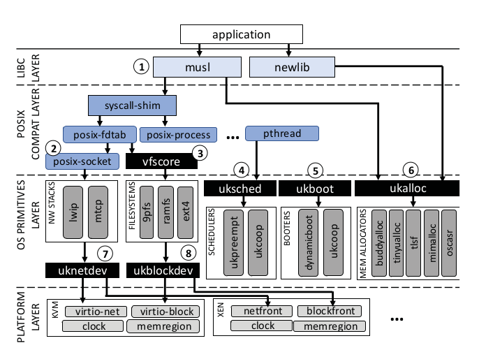

Unikraft#
概述#
What is Unikernel ?
fast instantiation (实例化) times (tens of milliseconds or less)
tiny memory footprints (内存占用) (a few MBs or even KBs)
high network throughput (10-40GB/s)
high consolidation (整合性) (being able to run thousands of instances on a single commodity server)
a reduced attack surface and the potential for easier (如何体现安全性？)
Defining a small set of APIs for core OS components that makes it easy to replace-out a component when it is not needed, and to pick-and-choose from multiple implementations of the same component when performance dictates.
Unikraft 设计思想：保留 Unikernel 的特性，解决应用的移植开销问题，在性能和移植性上作出权衡，可以进行灵活的配置。
What is Unikraft ?
Standard image with lots of unnecessary code; specialized image needs lots of development efforts.
Unikraft: a system that automatically builds a lean, high performance image for the application and the platforms.
Unikraft 构建镜像流程：
Select application
Select configured libs (main lib, platform lib, arch lib)
Build
Run with Unikernel binaries
Library pools
the architecture library tool, containing libraries specific to a computer architectur.
the platform tool, where target platforms can be Xen, KVM, bare metal and user-space Linux.
the main library pool, containing a rich set of functionality to build the unikernel form.
Main library:
Drivers (both virtual such as netback/netfront) and physical such as ixgbe
Filesystems
Memory allocators
Schedulers
Network stacks
Standard libs (libc, openssl)
Runtimes (Python interpreter, debugging and profiling tools)
Perf: 1.7x-2.7x performance improvement compared to Linux guests
Image size: images for these apps are around 1MB
Memory footprint: require less than 10MB of RAM to run
Boot: boot in around 1ms on top of the VMM time
关于性能测试， Unikraft 声称在镜像大小、引导时间、运行性能上都取得了非常好的效果。
源码分析#
{kind=link}

论文中的这张图非常清晰地给出了 Unikraft 的设计架构，从设计架构出发，可以对 源码 进行简要的分析。 （ lib 文件夹把所有的模块都平铺在一块，这也是之后在设计 OS 时需要注意的问题，没有这张图就很难找到头绪）
ukalloc#
a POSIX compliant external API
an internal allocation API called ukalloc
one or more backend allocator implementations
1struct uk_alloc;
2typedef void* (*uk_alloc_malloc_func_t)
3 (struct uk_alloc *a, __sz size);
4struct uk_alloc {
5 /* memory allocation */
6 uk_alloc_malloc_func_t malloc;
7 // ...
8 /* internal */
9 struct uk_alloc *next;
10 __u8 priv[];
11};
ukplat_memregion#
Unikraft 为不同平台（KVM、Linuxu 等）下的内存管理提供 ukplat_memregion* 相关接口。
1/* Descriptor of a memory region */
2struct ukplat_memregion_desc {
3 void *base;
4 __sz len;
5 int flags;
6#if CONFIG_UKPLAT_MEMRNAME
7 const char *name;
8#endif
9};
10/**
11* Returns the number of available memory regions
12* @return Number of memory regions
13*/
14int ukplat_memregion_count(void);
15/**
16* Reads a memory region to mrd
17* @param i Memory region number
18* @param mrd Pointer to memory region descriptor that will be filled out
19* @return 0 on success, < 0 otherwise
20*/
21int ukplat_memregion_get(int i, struct ukplat_memregion_desc *mrd);
ukboot#
Unikraf 在 ukboot 中对 memory allocator 等模块进行初始化，根据编译选项（ CONFIG_LIBUKALLOC 等），选择对应的接口实现。
1/* defined in <uk/plat.h> */
2void ukplat_entry(int argc, char *argv[])
3{
4 struct thread_main_arg tma;
5 int kern_args = 0;
6 int rc __maybe_unused = 0;
7#if CONFIG_LIBUKALLOC
8 struct uk_alloc *a = NULL;
9#endif
10#if !CONFIG_LIBUKBOOT_NOALLOC
11 struct ukplat_memregion_desc md;
12#endif
13#if CONFIG_LIBUKSCHED
14 struct uk_sched *s = NULL;
15 struct uk_thread *main_thread = NULL;
16#endif
17
18// ...
19
20#if !CONFIG_LIBUKBOOT_NOALLOC
21 /* initialize memory allocator */
22 ukplat_memregion_foreach(&md, UKPLAT_MEMRF_ALLOCATABLE) {
23
24 /* try to use memory region to initialize allocator
25 * if it fails, we will try again with the next region.
26 * As soon we have an allocator, we simply add every
27 * subsequent region to it
28 */
29 if (!a) {
30#if CONFIG_LIBUKBOOT_INITBBUDDY
31 a = uk_allocbbuddy_init(md.base, md.len);
32 // Other implementations...
33#endif
34 } else {
35 uk_alloc_addmem(a, md.base, md.len);
36 }
37 }
38 rc = ukplat_memallocator_set(a);
39#endif
40
41#if CONFIG_LIBUKALLOC
42 rc = ukplat_irq_init(a);
43#endif
44
45 ukplat_time_init();
46
47#if CONFIG_LIBUKSCHED
48 /* Init scheduler. */
49 s = uk_sched_default_init(a);
50#endif
51
52 tma.argc = argc - kern_args;
53 tma.argv = &argv[kern_args];
54
55#if CONFIG_LIBUKSCHED
56 main_thread = uk_thread_create("main", main_thread_func, &tma);
57 uk_sched_start(s);
58#else
59 /* Enable interrupts before starting the application */
60 ukplat_lcpu_enable_irq();
61 main_thread_func(&tma);
62#endif
63}
uksched#
uk_thread#
1struct uk_thread {
2 const char *name;
3 void *stack;
4 void *tls;
5 void *ctx;
6 UK_TAILQ_ENTRY(struct uk_thread) thread_list;
7 uint32_t flags;
8 __snsec wakeup_time;
9 bool detached;
10 struct uk_waitq waiting_threads;
11 struct uk_sched *sched;
12 void (*entry)(void *);
13 void *arg;
14 void *prv;
15#ifdef CONFIG_LIBNEWLIBC
16 struct _reent reent;
17#endif
18#if CONFIG_LIBUKSIGNAL
19 /* TODO: Move to `TLS` and define within uksignal */
20 struct uk_thread_sig signals_container;
21#endif
22};
struct thread 结构类型与传统定义方式类似，内部含有上下文指针、栈指针、状态位等。
以 uk_thread_init 函数为例，可以看出 Unikraft 模块解耦的特点。通过调用注册的内存管理模块中的函数来完成线程上下文的创建。
此外，线程对外提供了初始化接口 struct uk_thread_inittab_entry::init，可以进一步自定义初始化方法。
1int uk_thread_init(
2 struct uk_thread *thread,
3 struct ukplat_ctx_callbacks *cbs,
4 struct uk_alloc *allocator,
5 const char *name,
6 void *stack,
7 void *tls,
8 void (*function)(void *),
9 void *arg) {
10 // ...
11 /* Allocate thread context */
12 ctx = uk_zalloc(allocator, ukplat_thread_ctx_size(cbs));
13 if (!ctx) {
14 ret = -1;
15 goto err_out;
16 }
17 // ...
18 /* Iterate over registered thread initialization functions */
19 uk_thread_inittab_foreach(itr) {
20 ret = (itr->init)(thread);
21 if (ret < 0)
22 goto err_fini;
23 }
24 // ...
25 err_fini:
26 /* Run fini functions starting from one level before the failed one
27 * because we expect that the failed one cleaned up.
28 */
29 uk_thread_inittab_foreach_reverse2(itr, itr - 2) {
30 (itr->fini)(thread);
31 }
32 uk_free(allocator, thread->ctx);
33 // ...
34}
uk_sched#
1struct uk_sched {
2 uk_sched_yield_func_t yield;
3
4 // ...
5
6 /* internal */
7 bool threads_started;
8 struct uk_thread idle;
9 struct uk_thread_list exited_threads;
10 struct ukplat_ctx_callbacks plat_ctx_cbs;
11 // bind to memory allocator
12 struct uk_alloc *allocator;
13 struct uk_sched *next;
14 void *prv;
15};
ukboot 的入口中，对调度器进行了初始化。在调用 uk_thread_create 后创建主线程，并调用 uk_sched_start 开始执行线程。
这个主线程绑定到用户自定义的 main 函数，默认采用 Weak Symbol 的方式，如果没有实现就直接 panic。
1// defined in lib/ukboot/boot.c
2#if CONFIG_LIBUKSCHED
3 main_thread = uk_thread_create("main", main_thread_func, &tma);
4 uk_sched_start(s);
5#else
6
7// defined in lib/uksched/sched.h
8/* Set s as the default scheduler. */
9int uk_sched_set_default(struct uk_sched *s);
10// Other APIs...
从 uksched 的整体设计来看， uksched 依赖于 ukalloc 的实现（创建 uk_thread 和 uk_sched 实例等），需要调用内存管理的接口。
所以图中的两个部分严格上来讲应该存在依赖关系（涉及到未来可能引入的 Fault Isolation 问题）。
总结#
Unikraft 采用 Unikernel 的架构，避开了特权级切换和地址空间切换等带来的开销，在一定程度上提高了性能。 此外， Unikraft 在编译期对应用进行定制化构建，通过大量的编译选项和脚本工具来为应用选择依赖库。 这个方法虽然能减小镜像规模，但如果未来想要支持更多大型项目，代码内加入大量的编译选项会使项目变得臃肿不堪。 Unikraft 不提供容错机制，即应用的崩溃是不可恢复的，更底层的安全性要依赖于 Hypervisor。 对于很多内核来说，性能和错误隔离机制二者是相冲突的，具体的取舍要取决于内核的设计目标（运行时环境、支持的应用等）。 对于大多数 Unikernel 来说，由于不存在地址空间的区分，进程退化为了线程，或者说二者之间的区别不明显。
对于传统的宏内核来说，进程间存在父子关系的概念，应用会采用类似 spawn 和 fork 的系统调用。fork 采用 COW 的机制，而 spawn 则是全部复制一份（具体实现参考 Linux 官方文档）。地址空间的隔离是操作系统配合硬件地址翻译机制实现的一种隔离方法，多道程序下，TLB 缺失的概率也会比较高，所以用户和内核的切换的开销有一部分来自于地址翻译（一次 TLB 缺失至少要多访问内存一次）。所以关键问题在于，能否设计单一地址空间来模拟传统的多地址空间隔离。
模块化工程应满足 高内聚低耦合 原则，低耦合模块不应该了解其他模块的内部工作原理，高内聚意味着模块应该仅包含相关性的代码。
模块间的通信不可避免，通信的方法一般是实现中间层，例如 Redleaf 中的 Shared Heap 。
模块间通信可以划分为两种形式，一种是 数据交互，另一种是 模块切换，类似于 Theseus 中的 Swap Cell。
模块的接口应该保证是最小的，不应该对外暴露内部实现细节，尽可能地减少外部调用者对于接口的访问范围。
对上应封装 POSIX 接口，用来支持不同语言环境下的应用的调用，对下根据选择的模块对这些接口采用不同的实现。